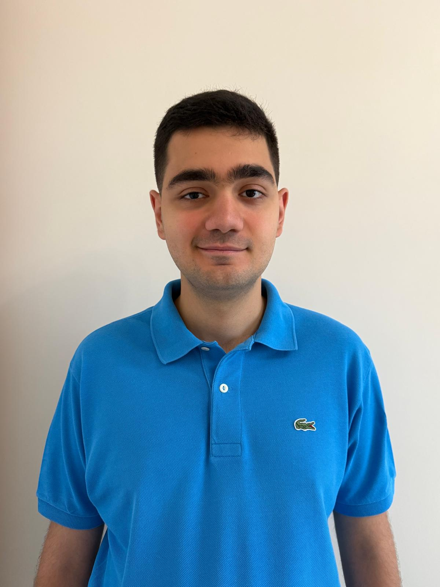

01
Delficase
Continuous development of a Shopify e-commerce website, including theme customization, custom frontend features, responsive UX improvements, app integrations, troubleshooting and performance optimization.
Visit project ↗WEB DEVELOPER · SHOPIFY · E-COMMERCE
Frontend-focused Web Developer with hands-on experience in Shopify, Liquid, WordPress, responsive interfaces, e-commerce optimization, SEO and technical maintenance.

*Based on the work periods listed in the CV; project count reflects the projects explicitly listed in the CV.
SELECTED WORK
From Shopify storefronts to WordPress websites and e-commerce experiences, my work sits at the intersection of frontend development, usability and business needs.
Continuous development of a Shopify e-commerce website, including theme customization, custom frontend features, responsive UX improvements, app integrations, troubleshooting and performance optimization.
Visit project ↗Shopify storefront development and optimization with responsive design, custom functionality, third-party app integrations, technical maintenance and UX improvements.
Visit project ↗Frontend and e-commerce work across Shopify, Etsy and Otto, including product content, SEO, storefront optimization and day-to-day digital commerce operations.
Visit project ↗Shopify storefront optimization, custom sections, app selection and configuration, responsive components, conversion-oriented UX improvements and AI-assisted visual/content workflows.
Visit project ↗Independently developed and maintained a Shopify website for the Dutch/Flemish market, learning unfamiliar terminology and adapting product content, structure and UX to the target audience.
Visit project ↗Developed an e-commerce website from scratch with product catalogues, category navigation, search, product detail pages, cart features and dedicated PVC, laminate and wooden flooring sections.
Visit project ↗Shopify theme customization, responsive frontend improvements, performance optimization, technical troubleshooting and on-page SEO across product and collection pages.
Visit project ↗WordPress frontend optimization, responsive design, plugin configuration, third-party integrations, troubleshooting, performance work and ongoing maintenance.
Visit project ↗WordPress theme and plugin customization, responsive frontend improvements, third-party integrations, technical troubleshooting and performance optimization.
Visit project ↗Shopify theme development and optimization combined with technical SEO, keyword research, on-page improvements, performance work and continuous storefront maintenance.
Visit project ↗TOOLBOX
A practical stack built around frontend development and e-commerce, with growing experience in modern application development.
EXPERIENCE
Website and e-commerce development, responsive frontend interfaces, Shopify theme customization, Etsy product/account management, SEO, performance optimization, promotions and technical e-commerce support.
Resolved UI, functionality and responsiveness issues; developed responsive interfaces; supported lead generation, prospect research, market analysis and digital visual content creation.
Built and maintained websites, customized Shopify themes with Liquid/HTML/CSS, developed custom sections and filtering systems, worked with Search & Discovery and metafields, and customized WordPress websites.
Developed custom Shopify features with Liquid, HTML and CSS; improved mobile usability; implemented mega menus; produced e-commerce graphics and supported marketing visuals.
Customized Shopify themes, built custom Liquid sections, developed responsive interfaces, worked with Shopify Search & Discovery/metafields, customized WordPress, and independently maintained multiple client websites.
ABOUT
I am a Computer Engineering graduate from Kadir Has University with practical experience in web development and e-commerce. My professional work has focused strongly on Shopify and WordPress, while my engineering background gives me a broader foundation in software development, databases, algorithms, networks and problem solving.
I enjoy taking an existing website or store, understanding what is not working, and turning it into a cleaner, faster and more useful experience.
HAVE A PROJECT IN MIND?